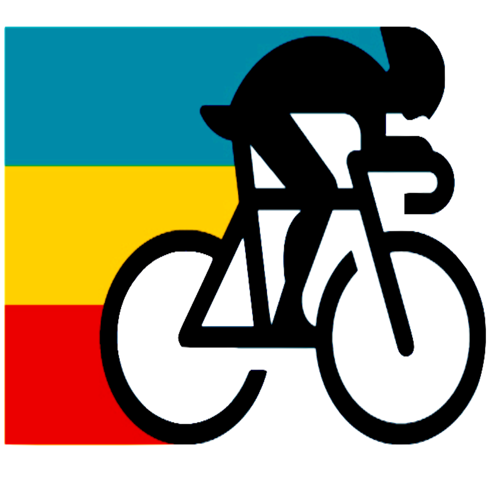

<ion-header [translucent]="true">
  <ion-toolbar color="primary">
    
    <ion-button *ngIf="origin && destination" fill="clear" (click)="navigateToProperties()">
      <ion-icon name="chevron-forward-outline" slot="icon-only"></ion-icon>
    </ion-button>
  </ion-toolbar>

</ion-header>

<ion-content [fullscreen]="true">
  <div id="map"></div>
  <div id="elevation_chart" (click)="clickGhrap($event)"></div>
  <div id="kms">Distance: {{kms}} kms</div>
  <div class="backdrop" *ngIf="showBackdrop" (click)="onClickBackDrop()">
    <div class="infoBackDrop">
      Selecciona dos puntos en el mapa para crear tu match!
    </div>
    <!-- <svg viewBox="0 0 340 333">

      <path class="path" fill="white" stroke="#ccc" stroke-width="4"
        d="M66.039,133.545c0,0-21-57,18-67s49-4,65,8 s30,41,53,27s66,4,58,32s-5,44,18,57s22,46,0,45s-54-40-68-16s-40" />

    </svg> -->
  </div>

</ion-content>